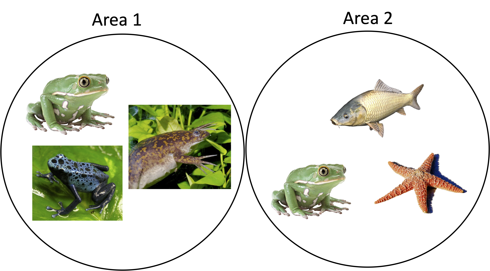

生物多様性入門
社会と科学技術の界面 第11~12回
自己紹介：ニッタ（新田）ジョエル
- 研究テーマ1: シダの生態と進化
- 研究テーマ2: データサイエンスのためのソフトウェア開発
- https://www.joelnitta.com

自己紹介：ニッタ（新田）ジョエル
カリフォルニア生まれ育ち
日系アメリカ人の4世
高校時代に交換留学生として初めて日本を訪れた

生物多様性とは？
生物多様性のイメージを記入してください（クイズではありません）。

なぜ生物多様性を大事にしないといけない？
理由を簡単に記入してください（クイズではありません）。
なぜ生物多様性を大事にしないといけない？
- 森や山のような自然の場所に一度も行けなくなるとしたらどう感じますか？

https://images.unsplash.com/
なぜ生物多様性を大事にしないといけない？
- グレートバリアリーフのような場所が消滅すると知ったらどう感じますか？

https://www.nma.gov.au/
なぜ生物多様性を大事にしないといけない？
- 花に受粉するミツバチがいなかったために果物が食べられないとしたらどう感じますか？

https://upload.wikimedia.org/
なぜ生物多様性を大事にしないといけない？
- 湿地がないため清潔な飲料水を得られないとしたらどう感じますか？

https://upload.wikimedia.org/
生物多様性は危機に瀕している
- 気候変動
- 人口増加
- 外来種
- 今回の授業では保護については詳しく説明する時間がありませんが、ご興味のある方はBiodiversity and Japanを受けてください。

https://www.iema.net/articles/climate-change-to-pose-bigger-threat-to-biodiversity-than-land-use-by-2070/
生物多様性入門のビデオ

- カリフォルニア科学アカデミー（California Academy of Sciences）が提供しているシリーズ
どちらの方が多様性が高い？
（クイズではありません）

https://en.wikipedia.org/, https://www.worldatlas.com

哺乳類の種数
Schipper et al. 2008, Science 225–230
標高

Nitta et al. 2017, Ecol. Mono. 278–296
どちらの方が多様性が高い？

（クイズではありません）
世界の生物多様性ホットスポット35か所

世界の生物多様性ホットスポット35か所（日本がその一つ！）
生物多様性の体験
隣の方と話し合ってください：
高い生物多様性が見られる、または体験できる場所はどこですか？
低い生物多様性が見られる、または体験できる場所はどこですか？
なぜ違いがあると思いますか？
グループごとに1名がSocrativeで回答してください（クイズではありません）。